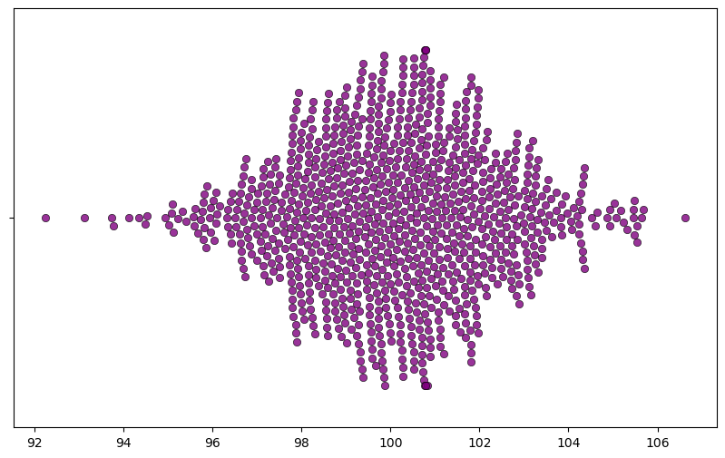
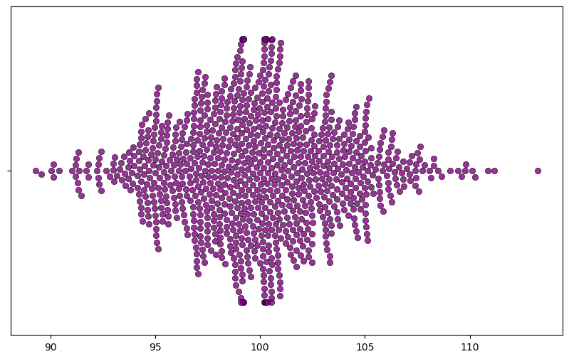

import numpy as np
from matplotlib import pyplot as plt
import seaborn as snsLet’s start from the basics: The idea is to gather data to make an inference about the population. We use what we know (sample data) to estimate what we don’t (population).
So, let’s see what happens as one collects more data.
for n in range(10, 101, 10):
sampled = np.random.normal(loc=100, scale=15, size=n)
print('Sampling ' + str(n) + ' observations')
print('Mean: ' + str(np.mean(sampled)))
print('Standard Deviation ' + str(np.std(sampled)))
print('\n')Sampling 10 observations
Mean: 96.54930308046485
Standard Deviation 17.69744525686926
Sampling 20 observations
Mean: 95.26529645787349
Standard Deviation 13.557714188035797
Sampling 30 observations
Mean: 99.59631039122944
Standard Deviation 16.67387851610786
Sampling 40 observations
Mean: 94.76579341950723
Standard Deviation 18.06257861698366
Sampling 50 observations
Mean: 99.61537083458882
Standard Deviation 14.897878602988285
Sampling 60 observations
Mean: 98.68203398707892
Standard Deviation 14.644083079076118
Sampling 70 observations
Mean: 100.36682454658889
Standard Deviation 15.427573719883997
Sampling 80 observations
Mean: 101.00471630426532
Standard Deviation 12.678064261146886
Sampling 90 observations
Mean: 102.7631649616841
Standard Deviation 13.03915710302493
Sampling 100 observations
Mean: 99.17823535292733
Standard Deviation 14.951583438089918
As one increases the sample size taken from the population, sample statistics will approach towards the population parameter.
DOES NOT NECESSARILY DECREASE! (do not confuse std_dev and std_err) As one can see from the example above!
But standard error WILL decrease as the sample size increases. It should make sense intuitively: I have more confidence in my estimates if I know more.
for n in range(10, 101, 10):
sampled = np.random.normal(loc=100, scale=15, size=n)
print('Sampling ' + str(n) + ' observations')
std_err = np.std(sampled) / np.sqrt(n)
print('Standard error approximation: ' + str(std_err))
print('\n')Sampling 10 observations
Standard error approximation: 4.452823707231046
Sampling 20 observations
Standard error approximation: 3.798915557039333
Sampling 30 observations
Standard error approximation: 2.3932757697459746
Sampling 40 observations
Standard error approximation: 2.624220779126406
Sampling 50 observations
Standard error approximation: 2.2840746792281217
Sampling 60 observations
Standard error approximation: 2.015124706208566
Sampling 70 observations
Standard error approximation: 1.7230901229016737
Sampling 80 observations
Standard error approximation: 1.5993946754011168
Sampling 90 observations
Standard error approximation: 1.66349862578967
Sampling 100 observations
Standard error approximation: 1.577820207327762
How close is the approximation? Let’s try it for one sample
n = 51
pop = np.random.normal(loc=100, scale=15, size=300000) # Population with normal distribution(mean=100, sd=15)
sampled = np.random.choice(pop, size=n) # randomly sampling
estimated_mean = np.mean(sampled) # sample mean
estimated_sd = np.std(sampled) # sample standard deviation
estimated_std_err = np.std(sampled) / n**.5 # estimated standard error, expected variation for my sample statistic.
print(estimated_mean, estimated_sd, estimated_std_err)95.27311481976386 15.960503088053418 2.2349174605268747# Let's take many samples and estimate the mean
mean_estimates = []
for i in range(1000): # Let's do it 1000 times, sampling 51 in each iteration.
sampled = np.random.choice(pop, size=n)
mean_estimates.append(np.mean(sampled))
np.std(mean_estimates)2.1480690130242537As one can see, it’s not that far away.
plt.figure(figsize=(10,6))
g = sns.swarmplot(data=mean_estimates, orient="h", size=6, alpha=.8, color="purple", linewidth=0.5,
edgecolor="black")
What happens when one lowers the sample size? More variation, less confidence. As the sample size increases the estimates approach towards the parameter, so with large sample size each sample ends up having similar estimates. However, that’s not the case with low sample size.
n = 16
mean_estimates = []
for i in range(1000): # Let's do it 1000 times
sampled = np.random.choice(pop, size=n)
mean_estimates.append(np.mean(sampled))
np.std(mean_estimates)3.713500386895356plt.figure(figsize=(10,6))
g = sns.swarmplot(data=mean_estimates, orient="h", size=6, alpha=.8, color="purple", linewidth=0.5,
edgecolor="black")
Watch out the x-axis, it’s much wider now.
mean_estimates = {
16:[],
23:[],
30:[],
51:[],
84:[],
101:[]
}
for n in [16, 23, 30, 51, 84, 101]:
for i in range(500):
sampled = np.random.choice(pop, size=n)
mean_estimates[n].append(np.mean(sampled))for key in mean_estimates.keys():
print('Sample size: ' + str(key))
print('Standard deviation (std_err) around the estimates: ' + str(np.std(mean_estimates[key])))
print('\n')Sample size: 16
Standard deviation (std_err) around the estimates: 3.855337925425897
Sample size: 23
Standard deviation (std_err) around the estimates: 3.1917223557725363
Sample size: 30
Standard deviation (std_err) around the estimates: 2.7639204989190023
Sample size: 51
Standard deviation (std_err) around the estimates: 2.0366022769176806
Sample size: 84
Standard deviation (std_err) around the estimates: 1.736807903528174
Sample size: 101
Standard deviation (std_err) around the estimates: 1.504399688755003